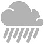

Forcast
- Monday
 - Tuesday
- Wednesday
- Thursday
- Friday
- Saturday
- Sunday
Home of the world renowned Rain Festival: January 1st - December 31st
Home of the world renowned Rain Festival: January 1st - December 31st
Seattle higways have been voted best slow crawl commute by Traffic Connoisseur Magazine.
There is a good chance that Seattle will soon be hit by a 9.0 or greater earthquake. Here are some of the faults that that could kill you:
More doom and gloom here
Ever heard of the "Seattle Freeze"? No, not the weather check it out
In short, Seattle is bad for your health.